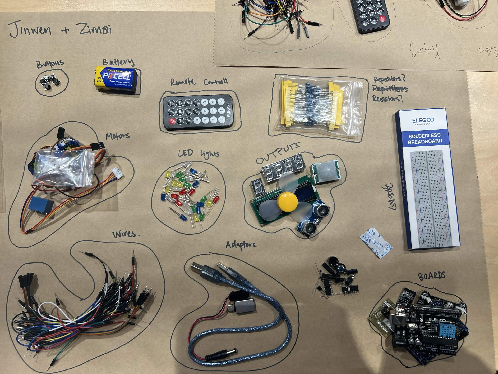
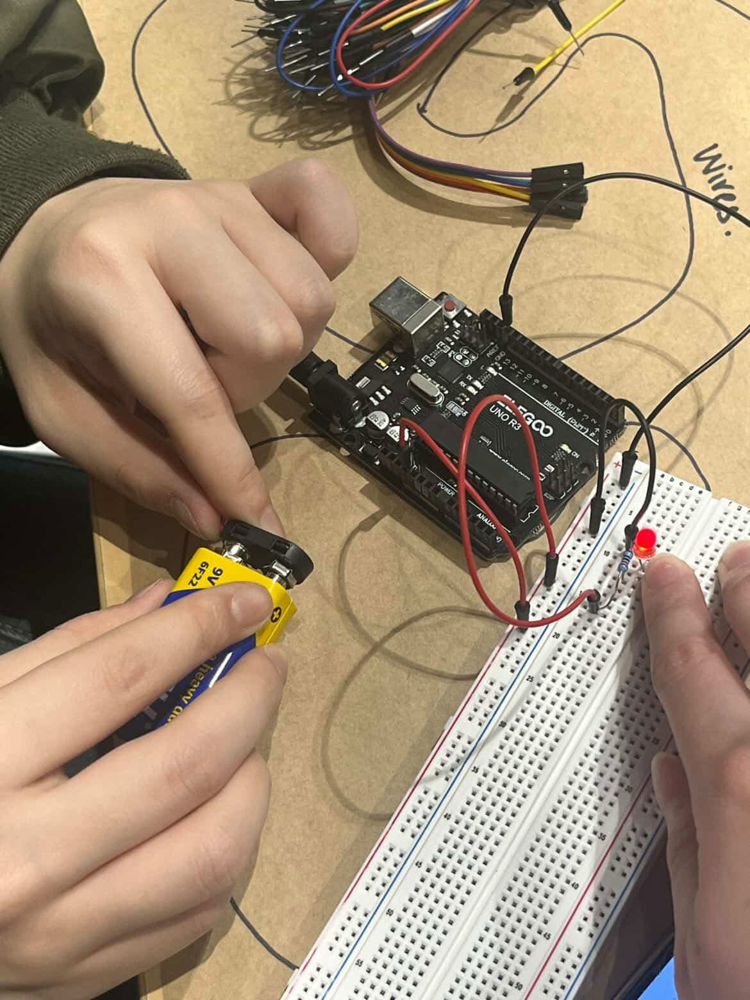
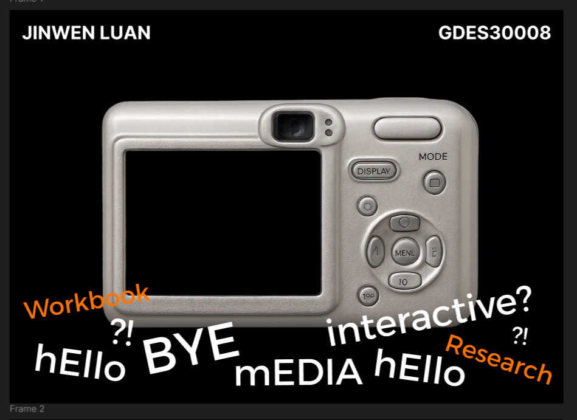
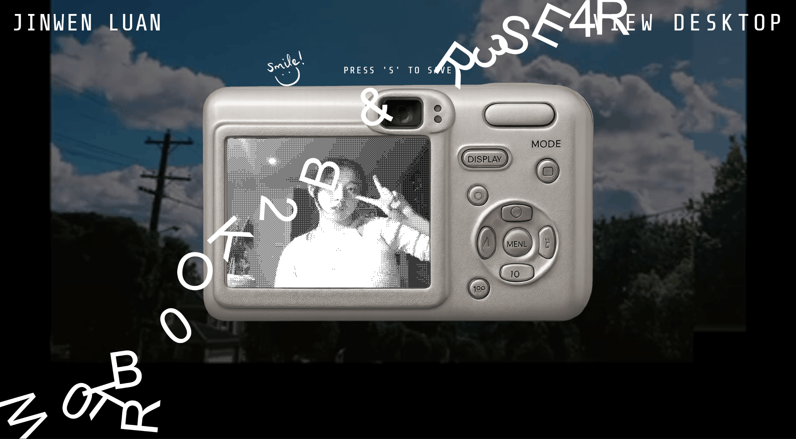

Despite having some knowledge of Arduinos from using them briefly in High School, it was still a challenge to recall what each part's function was as well as what their name was. The only one I could remember was bread board because i always thought 'bread' was funny hahahaha

We also constructed a small circuit in this tutorial using a sensor and LED light. This was a nice refresher for me on how to use arduinos.

